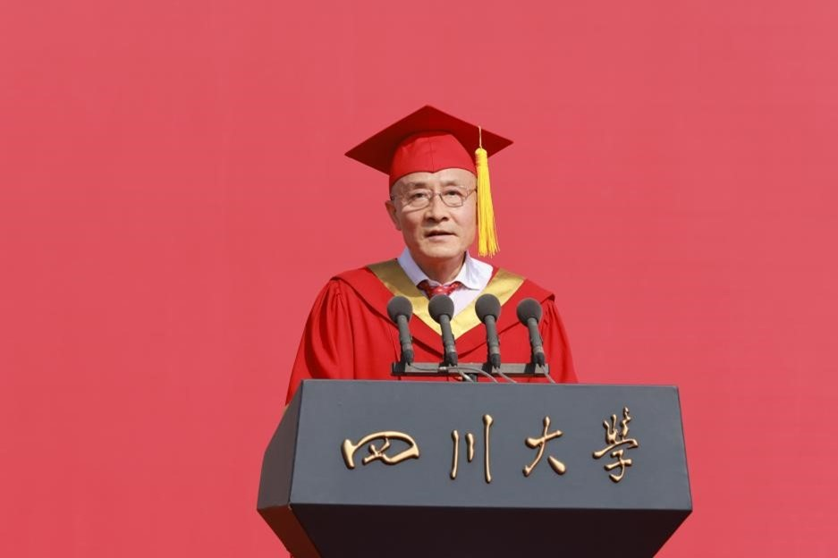

学院通知 · 竞赛比赛
坚定前行步履 铸就人生厚度——校长汪劲松在四川大学2025届学生毕业典礼上的讲话
发布时间：2025-06-26
坚定前行步履 铸就人生厚度 ——在四川大学2025届学生毕业典礼上的讲话 校长 汪劲松 亲爱的同学们、老师们、家长朋友们： 大家上午好！今天，我们在这里隆重举行仪式，为青春加冕、为新程壮行。首先，我谨代表全校师生员工、代表甘霖书记，热烈祝贺2025届同学们顺利毕业！向为同学们成长辛勤付出的老师们、家长们、校友们，致以衷心的感谢和诚挚的敬意！ 同学们，当今世界，百年未有之大变局交织激荡，人工智能科技浪潮蓬勃发展，中国式现代化进程加速推进，你们这一代是“平视世界”的一代，肩负着民族复兴的时代重任，面临着前所未有的机遇和挑战。习近平总书记指出：“青年的人生之路很长，前进途中，有平川也有高山，有缓流也有险滩，有丽日也有风雨，有喜悦也有哀伤。心中有阳光，脚下有力量，为了理想能坚持、不懈怠，才能创造无愧于时代的人生。”前行是人生的主旋律，既是对外在世界的探寻，也是对内心深处的求索。前行的目的不仅在于抵达，更在于旅程中的蜕变。作为师长，今天我想重点围绕坚守与选择、平凡与伟大、困难与成长、过程与结果这四组关系，与大家分享一些感悟与体会。 第一，坚守是选择的底气，心有所定，方能行稳致远。 变化的世界里我们面临许多选择，有时让人不知所措，有时让人是非难辨。选择是一时的人生，但人生是永恒的选择。真正的选择从不是随波逐流，而是在压力下坚定信念，在困境中坚守自我，在诱惑前保持清醒，在喧嚣里笃定从容，为了目标一往无前、锲而不舍。我们的老校长吴玉章先生，少年时立志“做点有益于人，有益于国的事情”。面对清廷的威胁，他不为所动；面对国民党的劝诱，他坚定表示“绝不会二三其德”。新中国成立后，年过七旬的吴老仍为祖国教育事业贡献力量，用一生践行坚守的真谛。毛主席评价他：“一个人做点好事并不难，难的是一辈子做好事，不做坏事。”著名敦煌学家、我校杰出教授项楚先生，淡泊名利、潜心学术研究，几十年如一日埋首古籍、求真求实，一字一句认真校勘，成千上万次地纠正误录、辨明俗字，仅手抄卡片就数万张，终成一代大家，填补了敦煌俗文学研究的空白。人生就是在不断选择中前行，在坚守中沉淀，始终志存高远、守住本心，以德行立身，以实干立业，努力让自己的人生更有价值、更有厚度。 第二，平凡是伟大的底色，尽己所能，终成不凡之光。 《三国志》中讲：“尘雾之微，补益山海；萤烛末光，增辉日月。”伟大出自平凡，平凡造就伟大。人的一生没有那么多的波澜壮阔，静水流深方为常态，脚踏实地、持之以恒做好一件件小事，平凡的工作也可以创造伟大的成就，平凡的人也能收获精彩的人生。“燃灯校长”张桂梅创办了全国第一所公办免费女子高中，用20年光阴帮助2000多名山区女孩走出大山，用平凡的力量托举起她们的人生。今年2月，《光明日报》头版报道了我校国际关系学院本届毕业生杨聪同学的故事，他既是川大学子，也是一名扎根西藏阿里高原的人民警察。在高寒缺氧的恶劣环境中，他十多年如一日，风雪无阻，走遍辖区900平方公里的角角落落，对近700名群众的情况了如指掌。今年毕业后，他又将返回基层一线。当接受记者采访时，杨聪腼腆地说道：“我没什么好写的，我就是个平凡的人。”他们的事迹告诉我们，“伟大”不过是扎根于平凡岗位，把一件件平凡的事坚持做到极致，终将凝结成为时光长河中的不凡之光。 第三，困难是成长的试炼，历经风雨，始得砥砺玉成。 前行之路并非一片坦途，困难与挫折如影随形，也许是工作不顺心，也许是生活不如意，也许是一时的迷茫与困惑。正如明代思想家王阳明所讲“人须在事上磨，方立得住”，他一生跌宕起伏，少年时才华横溢，却屡试不第，进入仕途后又因仗义执言而含冤入狱，被贬到偏远荒凉、瘴气弥漫的龙场驿，甚至一度住在山洞里，但他依然保持乐观的心态，潜心研究，终成一代大儒。真正的成长往往萌芽于逆境之中，并在克服困难的过程中实现蜕变。前几天，我在参加毕业生代表座谈会时听到公共管理学院本届毕业生粟秋滔的故事，这位21岁的青春女孩，在经历身体痛苦与诸多不便的同时，并没有选择自卑和放弃，而是积极克服心理恐惧、学习困难和环境挑战，从牵头负责运营川大残健融合工坊，到奔赴大山深处支教，再到勇获“挑战杯”国家级一等奖，她经历了无数次的尝试、无数次的失败、无数次的突破，这种坚韧、执着、无畏和勇气，让她不仅收获了丰富的人生体验，更让她自信从容地面对未来。前方的路总要自己蹚出来，坚韧不拔跨越山海，你会发现，那些曾经阻挡前行的挫折，已经化为成长路上最坚实的基石；那些曾以为会压垮自己的重担，也将成为人生厚度的注释。 第四，过程是结果的铺垫，点滴积累，自能厚积薄发。 前行是一个长久的过程，真正的答案不在终点，而在过程本身。过于追求结果，往往会忽略过程中的美好，甚至有时让人在追求中迷失自我。《韩非子》曾记载这样一个故事，一个徒弟与师父比赛驭马驾车，徒弟换了三匹马都输了，便埋怨师父没教真本事。师父说，输掉比赛不是因为本事不够，而是你太在意输赢，没有把心思用在真正关系输赢的“马”身上。“莫问收获，但问耕耘”，恰如春日播下希望的种子，日复一日施肥浇水，终会发现在不经意间已枝繁叶茂、花开绚烂。今年，动画电影《哪吒2》以破竹之势刷新中国电影票房在世界电影史上的纪录。影片的成功绝非偶然，而是长期耕耘、精雕细琢的必然。早在拍摄《哪吒1》时，导演饺子，也就是我校华西药学院2003届毕业生杨宇校友，带领团队将剧本打磨60多稿，角色设计推翻数十次；在《哪吒2》创作中，平均一个镜头的渲染时间超过200个小时，陈塘关一分钟的打戏反复琢磨半年，他甚至对每个角色的动作、配音亲身模仿、反复揣摩。成功是一个不断学习、尝试、创新和积累的过程，并不是一个简单的结果。踏实走好的每一步路、认真做好的每一个细节、辛勤洒下的每一滴汗水，终将成为破土而出的力量。 同学们，时间之河川流不息。今天，你们即将从川大出发，奔赴各自新的旅程。希望你们面对时代洪流，坚守内心本真，心怀星辰大海，纵使风雨兼程，亦能乘风破浪，始终脚踏实地、辛勤耕耘，用铿锵步履丈量人生的精彩，铸就人生的厚度。母校静候佳音，也期待大家和广大校友常回“家”看看！ 最后，祝同学们毕业快乐！愿此去繁花似锦，云程发轫，万里可期！ 谢谢大家！ 上一条： 四川大学举行2025届学生毕业典礼暨学位授予仪式 下一条： 我校举办2025全国博士后创新创业大赛四川大学金奖争夺赛
